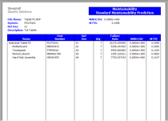

Windchill Maintainability
formerly Relex Maintainability Prediction
Windchill Maintainability uses an industry-standard approach to organize maintainability analyses and to calculate a full range of maintenance related metrics. By analyzing the repair metrics of your system, you can accurately predict repair times, minimize downtime, and increase system availability. Based on globally accepted standards for reliability and maintainability predictions, Windchill Maintainability helps ensure you remain fully compliant.
Industry Standard Compliant. Windchill Maintainability is based on the accepted standard for maintainability predictions, MIL-HDBK-472, Procedures 2, 5A, and 5B. Organize your analysis process by incorporating these methodologies in an easy-to-use, functional framework. You can define repair tasks as you choose: down to a detailed level or at a higher, functional repair level. Windchill Maintainability also supports Fault Detection and Isolation (FD&I) outputs.
Complete Solution. Windchill Maintainability includes a task library taken directly from the MIL-HDBK-472 standard on maintainability. You can append to the supplied task library or create any number of your own task libraries. You may also create and define your own custom repair levels, in addition to, or in place of, the supplied levels of depot, intermediate, and organizational, to better reflect the processes in place at your organization. Additionally, you can export data from Windchill Maintainability into a MIL-STD-1388 2B LSAR compatible format.
 Professional Outputs. Windchill Maintainability is supplied with a range of industry standard reports and graphs. Easy-to-use Report and Graph Wizards provide complete user customization of outputs to fit your specific needs, without the need for IT experts. Once complete, reports and graphs can be printed or saved directly to Microsoft Word or Excel, and Adobe PDF.
Maintainability Prediction Data Sheet
6508_Windchill_Maintainability_DS_EN.pdf
Adobe Acrobat document [124.6 KB]